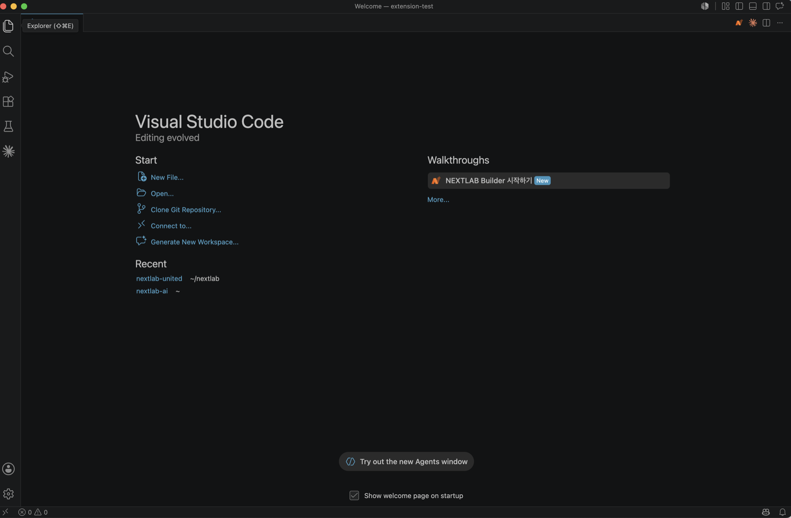
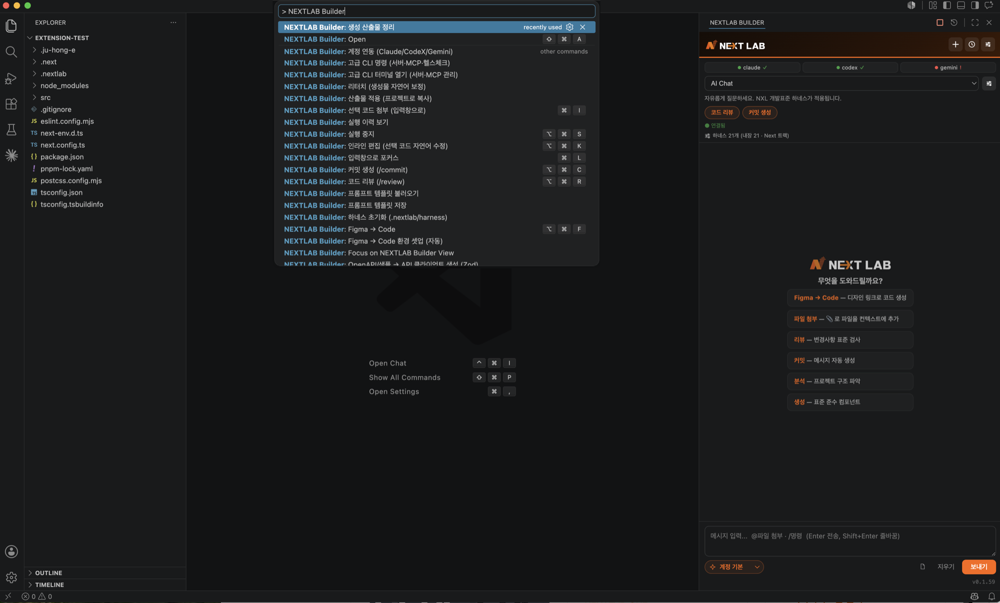
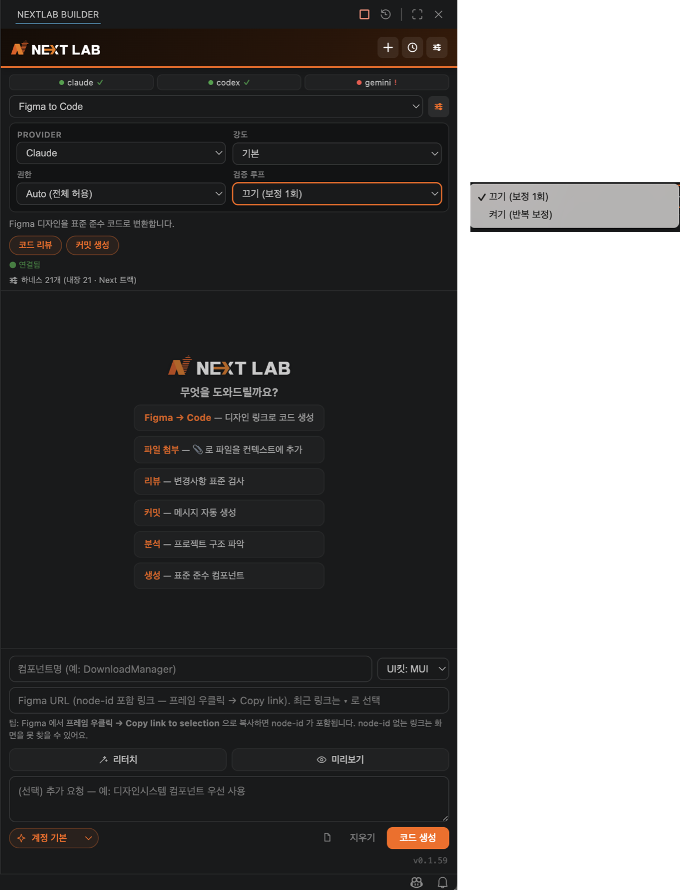
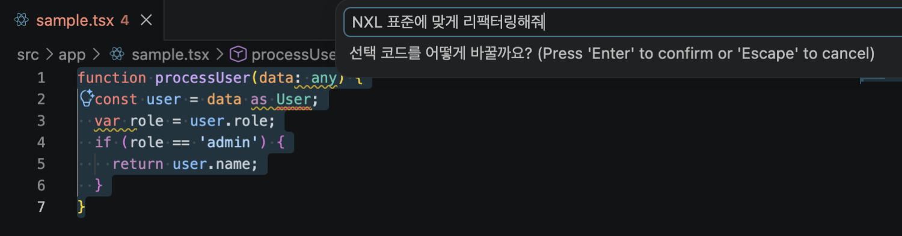
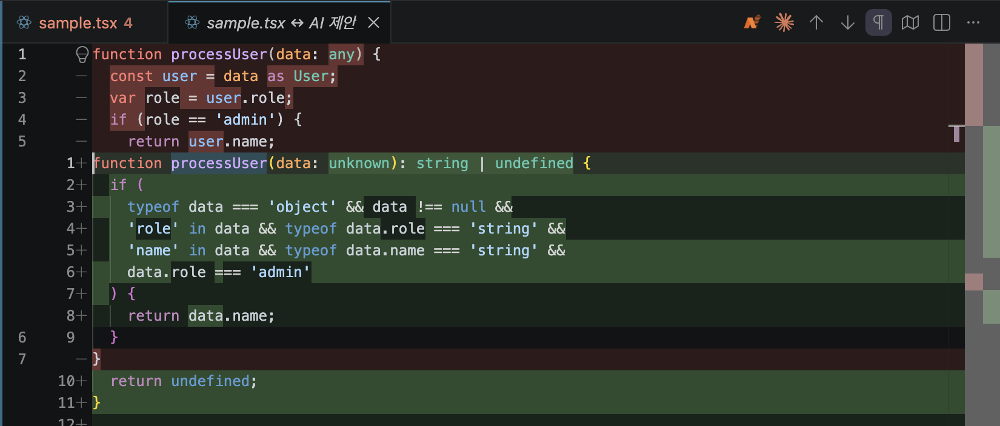
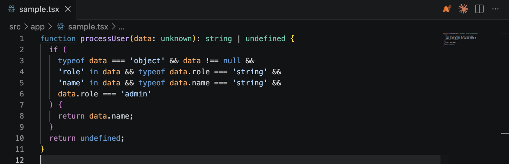
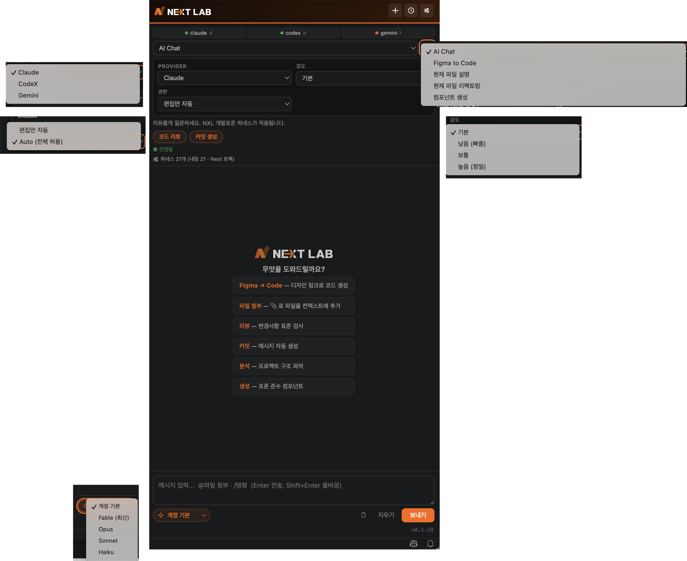

NEXTLAB Builder
사용자 메뉴얼
Figma 디자인을 한화 DS 코드로 바꾸고, 표준과 보안을 자동으로 지키는 VSCode 확장의 사용 설명서입니다. 2장 Figma → Code 가 이 도구의 주 기능이며, 이 문서의 절반을 차지합니다. 설정과 옵션은 6장에 모아 두었습니다 — 처음에는 읽지 않아도 됩니다.
이런 글자 는 화면에 그대로 보이는 값·경로·명령입니다.
[필수] 표시가 붙은 단계는 건너뛰면 기능이 동작하지 않습니다.
CHAPTER 01
설치와 첫 실행
설치는 파일 하나로 끝납니다. 생성 엔진 · 디자인시스템 3종 · 개발표준 문서 · 아이콘 415종이 VSIX 안에 전부 들어 있어 별도 서버나 인프라가 필요 없습니다.
1.1설치
쓰던 에디터 그대로 — VSIX 하나로 세 에디터
Builder 는 VSCode 계열 에디터에서 동작합니다. 에디터마다 따로 받을 것 없이
같은 .vsix 파일 하나를 씁니다. 설치 경로와 단축키도 모두 같습니다.
| 에디터 | 동작 | 비고 |
|---|---|---|
| Visual Studio Code | 표준 개발 환경 — 설치 즉시 사이드바에서 사용 | 권장 |
| Cursor | AI 네이티브 에디터에서도 동일하게 동작 | 동일 VSIX |
| Antigravity | Google 의 AI 에디터 — VSCode 계열이면 그대로 | 동일 VSIX |
설치 절차
- 확장 패널(Cmd+Shift+X) 우측 상단 … → Install from VSIX… → 배포받은
.vsix파일 선택 — Cursor · Antigravity 도 같은 위치입니다 - 에디터를 완전히 종료했다 다시 엽니다. 창만 새로고침하면 확장이 절반만 로드될 수 있습니다 (Cmd+Q 후 재실행)
- 좌측 활동 표시줄 또는 우측 상단에 주황색 N 아이콘이 보이면 설치 완료

claude, CodeX 를 쓰려면 codex 명령이 필요합니다.
Claude 미설치 시 npm install -g @anthropic-ai/claude-code 로 설치합니다.
확장이 CLI 를 못 찾으면 6.2 의 nxlCode.claude.path 에 절대경로를 지정할 수 있습니다.
1.2AI 계정 연동 필수
Builder 는 각자의 AI 계정으로 실행됩니다. 공용 API 키를 쓰지 않으므로 최초 1회 로그인이 필요합니다.
- 패널을 엽니다 (Cmd+Shift+A)
- 패널 상단의 연동 배지를 확인합니다 —
claude ✓는 연동됨,codex !는 미연동입니다 - 미연동 배지를 클릭하면 터미널이 열리며 로그인 절차가 시작됩니다
(Claude 는
claude /login, CodeX 는codex login) - 로그인을 마치고 패널로 돌아오면 배지가
✓로 바뀝니다
명령 팔레트에서 NEXTLAB Builder: 계정 연동 으로도 같은 절차를 실행할 수 있습니다.
두 Provider 를 모두 연동해 두면 작업 성격에 따라 클릭으로 전환할 수 있습니다.
1.3패널 열기 — 세 가지 경로
| 경로 | 방법 | 비고 |
|---|---|---|
| 단축키 | Cmd+Shift+A | 가장 빠름 |
| N 버튼 | 에디터 우측 상단의 주황색 N 아이콘 클릭 | 어느 화면에서든 |
| 명령 팔레트 | Cmd+Shift+P → NEXTLAB 입력 | 전체 기능 목록 |

패널 각부
- 상단 배지 — Provider 별 연동 상태. 클릭하면 로그인 안내로 이어집니다
- 작업 선택 — 무엇을 시킬지 먼저 고릅니다. 선택에 따라 아래 입력 영역이 바뀝니다
- 옵션 줄 — Provider · 강도 · 권한 · 모델 · 검증 루프 (6.1 참조)
- 상태줄 —
하네스 21개 (내장 21 · Next 트랙)처럼 지금 대화에 주입되는 표준의 개수와 판별된 트랙을 표시합니다 - 입력창 —
@로 파일 첨부,/로 명령 팔레트, Enter 전송, Shift+Enter 줄바꿈
CHAPTER 02 · 주 기능
Figma → Code
Figma 디자인 링크 하나로 한화 DS 스타일 React 코드를 생성합니다. 스크린샷을 보고 추측하는 방식이 아니라, Figma Dev Mode MCP 로 실제 색·간격·구조·변수를 읽어 변환합니다. 그래서 최초 1회 MCP 연결이 필요하고, 매번 node-id 가 포함된 링크가 필요합니다.
2.0전체 흐름 한눈에
2.1MCP 연결 — 최초 1회 필수
Builder 가 Figma 를 읽으려면 두 가지가 연결되어야 합니다. (A) Figma 데스크톱 앱의 MCP 서버를 켜는 일은 사람이 해야 하고, (B) AI CLI 에 그 서버를 등록하는 일은 확장이 자동으로 합니다.
Figma 데스크톱 앱에서 MCP 서버 켜기
자동화가 불가능한 유일한 단계입니다. Figma 쪽에서 직접 켜야 합니다.
- Figma 데스크톱 앱에서 대상 디자인 파일을 엽니다 — 브라우저에서는 동작하지 않습니다
- 캔버스에서 아무것도 선택하지 않은 상태로 Shift+D 를 눌러 Dev Mode 로 전환합니다
- 우측 패널의 MCP server 섹션에서 Enable desktop MCP server 를 클릭합니다
- 서버가
http://127.0.0.1:3845/mcp에서 대기 상태가 됩니다
Figma 앱을 끄면 MCP 서버도 함께 꺼집니다. 코드 생성 작업 중에는 Figma 앱을 켜 두세요.
확장에서 환경 셋업 실행 (자동)
명령 팔레트 → NEXTLAB Builder: Figma → Code 환경 셋업 (자동)
실행하면 다음을 순서대로 점검하고, 가능한 항목은 스스로 고칩니다.
| 점검 항목 | 내용 | 자동 |
|---|---|---|
| claude CLI | 설치 여부와 버전 확인 | 확인만 |
| Figma MCP 서버 | 127.0.0.1:3845 생존 확인 — 꺼져 있으면 켜는 방법을 안내하고 재확인 | 사람이 켬 |
| figma MCP 등록 | claude mcp add --transport http --scope user figma … 로 등록 | 자동 |
| storybook-mcp 등록 | 디자인시스템 사용법 조회용 — 실패해도 생성은 가능 | 자동 |
| codex MCP 등록 | codex 가 설치되어 있으면 같은 MCP 를 codex 설정에도 등록 | 자동 |
| 생성 엔진 CLI | 확장에 동봉된 엔진 탐색 | 확인만 |
점검이 끝나면 "Figma → Code 사용 준비 완료!" 알림이 뜹니다.
점검 결과 보기 를 누르면 항목별 ✓ / ✗ 를 확인할 수 있습니다.
셋업은 최초 1회면 되지만, Figma 앱을 껐다 켠 뒤에는 (A) 의 MCP 서버가 다시 꺼져 있을 수 있습니다. Figma → Code 실행 직전에 확장이 서버 생존을 빠르게 다시 확인하고, 꺼져 있으면 알려 줍니다.
2.2Figma 링크 복사 — node-id 가 핵심
Builder 는 링크에 담긴 node-id 로 "어느 프레임을 그릴지" 를 판단합니다. 파일 주소만 있고 node-id 가 없으면 엉뚱한 화면이 생성되거나 생성이 중단됩니다.
- Figma 에서 코드로 만들 프레임(화면 단위)을 선택합니다
- 우클릭 → Copy link to selection 을 선택합니다 (상단 Share 버튼의 링크 복사와 다릅니다 — 그쪽은 node-id 가 없을 수 있습니다)
- 복사된 주소에
?node-id=…가 포함되어 있는지 눈으로 확인합니다
# 올바른 링크 — node-id 포함 https://www.figma.com/design/<fileKey>/파일이름?node-id=684-16571&m=dev # 잘못된 링크 — 파일만 가리킴 (어떤 프레임인지 알 수 없음) https://www.figma.com/design/<fileKey>/파일이름
684-16571 은 내부적으로 684:16571 로 바뀌어
MCP 호출에 쓰입니다. Figma MCP 가 안내하는 Implement this design from Figma. @https://… 형태의 문구를
통째로 붙여넣어도 첫 번째 figma.com 주소를 스스로 찾아냅니다.
2.3입력 — 네 칸
패널 상단 작업 선택에서 Figma to Code 를 고르면 전용 입력 영역이 나타납니다.
단축키 Cmd+Alt+F 또는 입력창에 /figma 로도 전환됩니다.

| 칸 | 무엇을 넣나 | 비고 |
|---|---|---|
| 컴포넌트명 | 산출물 파일·폴더 이름이 됩니다. 예: DownloadManager |
PascalCase 권장 |
| UI 킷 |
MUI — 관리자 화면 DS2 — 운영·모바일 웹 (사내 DS 2.0) DS3 — 영업지원 (sales-frontend) |
화면 성격에 맞춰 선택 |
| Figma URL | 2.2 에서 복사한 node-id 포함 링크. 최근 링크는 ▾ 로 재선택 |
필수 |
| 요구사항 | 자연어 추가 지시. 예: 왼쪽메뉴를 제외하고 본문 내용만 그려줘 |
선택 |
입력을 마치고 코드 생성을 누르면 나머지는 도구가 이어갑니다. 생성에는 한화 개발표준 + 선택한 킷의 매핑 규칙 + 동봉 아이콘 415종 + 한화 폰트·테마가 자동으로 얹힙니다.
nxlCode.genHtml.uiKit 를 고정할 수 있습니다.
기본값 ask 는 워크스페이스 의존성을 보고 추천합니다
(@hanwhalife/design-system 이면 DS2, @mui 면 MUI).
2.4실행 — 진행 상황 읽기

- 요청 요약 카드 — 컴포넌트명 · UI 킷 · Figma node · 출력 폴더까지, 무엇이 실행되는지 먼저 보여줍니다
- 진행 로그 — 선택한 모델과 도구 호출 단위 진행 상황, 경과 시간이 그대로 보입니다
- 중지 — Cmd+Alt+S 또는 중지 버튼으로 언제든 멈출 수 있습니다
입력부터 검증 통과까지 보통 5~10분입니다. 화면이 복잡해져도 생성 시간은 크게 늘지 않습니다. 출력이 멈춘 채 일정 시간(기본 3분)이 지나면 무응답으로 보고 자동 중지합니다 — 긴 생성은 출력이 계속되므로 영향받지 않습니다.
2.5검증 — 기준을 넘은 것만 도착
생성 직후 세 겹의 검증이 순서대로 동작합니다. 앞의 둘은 기본으로 켜져 있습니다.
빌드 검증 · 자동 수정
기본 켜짐 — nxlCode.autoFixBuild
생성 코드가 빌드에 실패하면 에러를 분석해 1회 자동 수정을 시도합니다. 끄면 실패를 보고만 합니다.
시각 보정 · 정밀도 경고
기본 켜짐 — nxlCode.visualFix · nxlCode.precisionGate
빌드는 통과했지만 간격·색 정밀도가 의심되면 원본 Figma 스크린샷을 다시 조회해 1:1 대조하고 마진·간격·색을 1회 자동 보정합니다. 또한 산출물에 하드코딩 색이 과다하고 theme 토큰을 거의 쓰지 않으면 "정밀도 낮을 수 있음" 을 경고합니다.
검증 루프 (선택)
기본 꺼짐 — 패널 옵션에서 켜기 로 전환
정밀도를 끝까지 밀어붙일 때 켭니다. 매 반복마다 Playwright 실제 렌더 · 디자인 규칙 · 시각 대조 3종으로 채점하고, 모든 검증 항목이 통과하고 시각 점수가 게이트에 도달할 때까지 보정을 반복합니다. 최고점 산출물이 최종본이 됩니다.
| 기준 | 기본값 | 의미 |
|---|---|---|
| 최대 반복 | 3회 | 게이트 미달이어도 이 횟수에서 멈추고 최고점 산출물 복원 |
| 시각 게이트 | 90점 | 이 점수 이상이면 통과 (룰 점수는 진단용, 게이트에서 제외) |
| 시간 예산 | 15분 | 루프 전체 누적 기준. 0 이면 반복 횟수로만 제한 |

2.6결과 확인

- 렌더 미리보기 — 통과 직후 방금 만들어진 화면의 실제 스크린샷이 채팅에 바로 임베드됩니다. 파일을 열지 않고 눈으로 확인합니다
- Storybook 미리보기 —
Storybook 으로 미리볼까요?알림에서 원클릭. 한화 폰트·테마로 light/dark 를 모두 확인할 수 있습니다 (명령:NEXTLAB Builder: Storybook 미리보기, 슬래시:/preview) - 산출물 위치 —
.nextlab/generated/<컴포넌트명>/에 생성됩니다. 결과 카드에서 복사 · 새 파일로 열기 · 재생성 · 프로젝트 적용으로 바로 이어집니다
| 원본 (Figma) | 생성 결과 (Storybook) |
|---|---|
 |
 |
다크 모드를 따로 만들지 않아도 됩니다 — 테마 토큰 기반이라 Storybook 툴바 토글 한 번으로 Dark 와 Light 가 모두 나옵니다.
2.7리터치 — 자연어로 보정
결과가 대체로 맞는데 일부만 어긋났다면, 재생성하지 말고 리터치로 고치는 편이 빠릅니다.
Figma 입력 영역의 리터치 버튼 또는 슬래시 명령 /retouch 로 실행합니다.
# 리터치 지시 예시
카드 사이 여백을 24px 로 좁혀줘
결재선 영역 제목을 16px 볼드로 바꿔줘
하단 버튼을 오른쪽 정렬로 옮겨줘
2.8산출물 적용 — 프로젝트로 옮기기
검수를 마쳤으면 NEXTLAB Builder: 산출물 적용 (프로젝트로 복사) 를 실행합니다.
생성 폴더의 결과물이 프로젝트 안으로 복사되며, 컴포넌트별 하위 폴더로 정리됩니다.
.nextlab/generated/<컴포넌트명>/src/generated/ — nxlCode.genHtml.applyDir 로 변경 가능
어떤 UI 킷으로 생성했든 적용 대상은 한 곳으로 모이므로 결과물이 흩어지지 않습니다.
쌓인 생성물은 NEXTLAB Builder: 생성 산출물 정리 로 비울 수 있습니다.
Figma → Code 체크리스트
- Figma 데스크톱 앱이 켜져 있고, 대상 파일이 열려 있다
- Dev Mode 의 MCP server 가 Enable 되어 있다
- 환경 셋업에서
figma MCP 등록이✓였다 - 링크에
node-id가 포함되어 있다 - 화면 성격에 맞는 UI 킷을 골랐다 (MUI / DS2 / DS3)
- 결과를 미리보기로 눈으로 확인했다
CHAPTER 03
AI 채팅 · 인라인 편집
어느 AI 를 고르든 한화 개발표준이 자동으로 주입됩니다. 표준에 어긋나는 요청은 실행되지 않고, 규칙 번호와 함께 대안으로 대체됩니다.
3.1채팅 기본
- 파일 첨부 — 입력창에서
@를 치면 워크스페이스 파일 검색이 열립니다. 📎 버튼으로 파일·이미지도 첨부할 수 있습니다 - 선택 코드 첨부 — 에디터에서 코드를 선택하고 Cmd+I
- 슬래시 명령 — 줄 맨 앞에서
/를 치면 내장 명령 목록이 열립니다 (6.4 참조) - 입력창 포커스 — 어디서든 Cmd+L
unknown + Zod, R-09 → TanStack Query, T-08 → as const 유니언).
3.2인라인 편집 — Cmd+Alt+K
에디터를 떠나지 않고 선택한 코드를 자연어로 고칩니다. 적용 전에 diff 로 확인합니다.
1. 지시
위반이 있는 코드를 선택하고 Cmd+Alt+K → NXL 표준에 맞게 리팩터링해줘 한 줄이면 됩니다.

2. 제안 — 적용 전에 diff 로
원본과 AI 제안을 나란히 비교합니다. any · as 단언 · var 가
unknown + 타입 가드 구조로 바뀐 것이 한눈에 보입니다.

3. 적용 — 오류 0
진단 경고가 모두 사라지고, 반환 타입까지 명시된 표준 코드만 남습니다.

3.3AI Quick Fix
표준 위반 진단에 커서를 두고 전구 아이콘(Cmd+.)을 클릭하면 AI 가 그 규칙에 맞게 그 자리에서 수정합니다. 진단이 무엇을, 왜, 대신 무엇을 쓰라는지 함께 알려주므로 규칙을 외울 필요가 없습니다.
3.4그 밖의 생성 기능
| 기능 | 실행 | 설명 |
|---|---|---|
| 현재 파일 설명 | /explain | 열려 있는 파일의 구조와 역할을 설명 |
| 현재 파일 리팩토링 | /refactor | 표준 기준 개선안 제안 |
| 테스트 생성 | /test | 현재 파일 기준 테스트 코드 생성 |
| Storybook 스토리 생성 | /storybook | 현재 파일 기준 스토리 생성 |
| API 클라이언트 생성 | /api | OpenAPI·샘플 → Zod + TanStack Query 클라이언트 |
| 프롬프트 템플릿 | 명령 팔레트 | 자주 쓰는 지시문을 저장·불러오기 |
CHAPTER 04
코드 리뷰 · 커밋
4.1코드 리뷰 — Cmd+Alt+R
현재 변경사항(git diff)을 한화 개발표준 기준으로 점검합니다. 지적은 규칙 번호와 파일:라인으로 근거를 남기므로, 리뷰어와의 논쟁이 아니라 확인 작업이 됩니다. 커밋 전에 한 번 돌리면 리뷰 반려를 크게 줄일 수 있습니다.
4.2커밋 생성 — Cmd+Alt+C
변경 내용을 분석해 표준 형식의 커밋 메시지를 작성하고, 확인 후 실제 커밋까지 진행합니다.
diff 가 크면 반복되는 잡음 줄(타임스탬프·해시·로그)을 [xN] 으로 접어 토큰을 아낍니다
(nxlCode.optimizePromptTokens, 기본 켜짐 — 코드 본문은 손대지 않습니다).
CHAPTER 05
표준 · 보안 — 자동으로 지켜지는 것
이 장의 기능은 따로 실행하지 않아도 항상 켜져 있습니다. 무엇이 자동으로 지켜지는지만 알아 두면 됩니다.
5.1실시간 표준 진단 — 18개 규칙
AI 가 짠 코드든 사람이 짠 코드든, .ts · .tsx 를 편집·저장하는 즉시 위반을 표시합니다
(nxlCode.liveDiagnostics).

| 규칙 | 내용 |
|---|---|
| T-01 | any 금지 — unknown + 타입 가드 / Zod 로 대체 |
| T-02 | 타입 단언 as Type 금지 — 타입 가드 / satisfies (as const 는 허용) |
| T-03 | var 금지 — const 기본, 불가피하면 let |
| T-06 | @ts-ignore / @ts-expect-error 남용 금지 — 타입 자체를 수정 |
| T-07 | do...while 금지 — while / 고차함수 사용 |
| T-08 | enum 전면 금지 (문자열 enum 포함) — as const 객체 + 유니언 타입 |
| R-01 | Sanitize 없는 dangerouslySetInnerHTML 금지 — DOMPurify 정제 후 사용 |
| R-03 | React.FC 금지 — 일반 함수 + props 타입 명시 |
| R-05 | getServerSideProps / getStaticProps 금지 — RSC + fetch |
| R-06 | 내부 이동에 window.location 금지 — <Link> / useRouter |
| S-01 | 시크릿·API 키에 NEXT_PUBLIC_ / VITE_ 접두사 금지 |
| S-03 | eval() / new Function() 금지 |
| S-04 | innerHTML 직접 조작 금지 — React 렌더링으로 |
| S-07 | next/image remotePatterns 와일드카드 hostname:"**" 금지 |
| S-08 | 인증 토큰 localStorage/sessionStorage 저장 금지 — httpOnly 쿠키로만 |
| C-01 | 인라인 스타일 style={{ }} 금지 — sx / styled() / module.scss |
| C-02 | !important 금지 |
| E-02 | 프로덕션 코드에 console.log 금지 — 로거·에러 리포팅 사용 |
5.2민감정보 전송 차단 — 8종
입력창의 내용과 첨부 파일 본문을 전송 직전에 검사합니다. 검사는 PC 안에서 끝나므로
민감정보가 AI 서버에 도달하지 않습니다 (nxlCode.security.enabled).

차단되면 해당 값을 제거하거나 마스킹한 뒤 다시 보내면 됩니다.
5.3개발표준 하네스 — 21개 모듈
- 자동 주입 — 작업 성격에 맞는 모듈을 골라 AI 프롬프트에 강제합니다. 채팅·생성·리뷰 어디서나, 어느 Provider 를 골라도 동일합니다
- 트랙 자동 감지 — 워크스페이스의
package.json에next가 있으면 Next 트랙,vite면 Vite 트랙으로 판정해 해당 규칙만 적용합니다. 감지가 틀릴 때만nxlCode.stack으로 고정하세요 - 팀 커스터마이징 —
NEXTLAB Builder: 하네스 초기화로.nextlab/harness를 만들면 팀 규칙을 문서로 관리할 수 있습니다. 문서를 고치면 다음 실행부터 전원에게 반영됩니다 - 보안 잠금 — 절대금지·보안 모듈은 워크스페이스 하네스로 대체할 수 없습니다. 로컬 파일로 보안 정책을 무력화하는 우회가 차단됩니다
CHAPTER 06 · 참조
옵션과 설정
기본값 그대로 써도 됩니다. 이 장은 바꾸고 싶어졌을 때 찾아보는 참조 문서입니다.
6.1패널 옵션 — 대화마다 바꾸는 것

| 옵션 | 선택지 | 기준 |
|---|---|---|
| 작업 | AI Chat · Figma to Code · 현재 파일 설명 · 현재 파일 리팩토링 | 작업에 맞는 표준 모듈·프롬프트가 자동 구성됩니다 |
| Provider | Claude · CodeX | 어느 쪽이든 같은 한화 표준이 주입됩니다 |
| 강도 | 기본 · 낮음(빠름) · 보통 · 높음(정밀) | 간단한 일은 낮음, 복잡한 화면은 높음 |
| 권한 | 편집만 자동 · Auto(전체 허용) | Auto 는 설치 명령 등 도구 실행까지 허용해 중간에 막히지 않고 완주합니다 |
| 모델 | 계정 기본 · Fable(최신) · Opus · Sonnet · Haiku | Claude 기준. 대화 중에도 바꿀 수 있습니다 |
| 검증 루프 | 끄기(보정 1회) · 켜기(반복 보정) | Figma → Code 전용. 2.5 참조 |
6.2설정 전체 — settings.json
VSCode 설정에서 nxlCode 로 검색하면 모두 보입니다.
아래는 실제로 손댈 일이 있는 것들만 목적별로 묶은 것입니다.
생성 · 검증
| 설정 | 기본값 | 설명 |
|---|---|---|
| genHtml.uiKit | ask | Figma → Code 대상 UI 킷 고정. ask 는 매번 선택(의존성으로 추천) |
| genHtml.applyDir | src/generated | 산출물 적용 대상 폴더 (워크스페이스 루트 기준) |
| autoFixBuild | true | 빌드 실패 시 원인 분석 후 1회 자동 수정 |
| visualFix | true | Figma 원본과 1:1 대조해 간격·색 1회 자동 보정 |
| precisionGate | true | 토큰 미사용·하드코딩 색 과다 시 정밀도 경고 |
| validationLoop.enabled | false | 검증 루프 사용 (패널에서도 전환 가능) |
| validationLoop.maxIterations | 3 | 최대 반복 횟수 |
| validationLoop.visualGate | 90 | 통과 기준 시각 점수 (0–100) |
| validationLoop.budgetMinutes | 15 | 루프 총 시간 예산(분). 0 이면 무제한 |
Figma · 미리보기
| 설정 | 기본값 | 설명 |
|---|---|---|
| figma.mcpUrl | 127.0.0.1:3845/mcp | Figma 데스크톱 MCP 서버 주소. 비우면 기본값 |
| figma.designSystemUrl | (비어 있음) | 디자인시스템 Figma 파일 URL. 생성 시 이 DS 를 조회해 컴포넌트·아이콘·로고를 매칭 |
| figma.storybookMcpUrl | (엔진 기본값) | 디자인시스템 Storybook MCP 주소 |
| preview.viewports | [] | 미리보기 뷰포트 프리셋 추가 — 예: [{"name":"FHD","width":1920,"height":1080}] |
AI · 실행
| 설정 | 기본값 | 설명 |
|---|---|---|
| defaultProvider | claude | 기본 Provider (claude / codex) |
| defaultTaskType | chat | 패널을 열었을 때의 기본 작업 |
| reasoningEffort | (CLI 기본) | 추론 강도 (low / medium / high) |
| claude.model | (계정 기본) | Claude 실행 모델 |
| claude.permissionMode | acceptEdits | 권한 모드. UI 드롭다운 선택이 우선합니다 |
| claude.path / codex.path | (자동 탐색) | CLI 절대경로. PATH 에서 못 찾을 때만 지정 |
| runTimeoutMs | 180000 | 무응답(idle) 타임아웃(ms). 출력이 계속되는 긴 생성은 영향 없음. 0 이면 비활성 |
| optimizePromptTokens | true | 리뷰·커밋 diff 의 반복 잡음을 접어 토큰 절감 |
표준 · 보안 · 환경
| 설정 | 기본값 | 설명 |
|---|---|---|
| stack | auto | 하네스 트랙. auto 는 package.json 으로 감지 — 감지가 틀릴 때만 고정 |
| liveDiagnostics | true | 실시간 표준 진단 (5.1) |
| security.enabled | true | 민감정보 입력 차단 (5.2) |
| harness.allowWorkspace | true | 워크스페이스 하네스 로딩 허용. 끄면 동봉 정본만 사용 machine 스코프 — 워크스페이스 설정으로는 변경 불가 |
| nexus.enabled | false | 사내망 Nexus 레지스트리 사용. 기본 꺼짐(외부망 모드) |
| updates.channelUrl | nxl-ai-tools.reala.pro | 시작 시 1회 새 버전 확인. 버전·체크섬 조회만 하며 아무 정보도 보내지 않습니다 |
NEXTLAB Builder: 실행 이력 보기 로 무엇을 실행했는지, 내 사용량 (토큰·비용 대시보드) 로
얼마나 썼는지 확인할 수 있습니다. 조직 집계용 텔레메트리는 기능·Provider·성공여부·소요시간만 보내며,
프롬프트·코드·응답 본문은 전송하지 않습니다.
6.3단축키
| macOS | Windows · Linux | 동작 |
|---|---|---|
| Cmd+Shift+A | Ctrl+Shift+A | 패널 열기 |
| Cmd+Alt+F | Ctrl+Alt+F | Figma → Code |
| Cmd+Alt+R | Ctrl+Alt+R | 코드 리뷰 |
| Cmd+Alt+C | Ctrl+Alt+C | 커밋 생성 |
| Cmd+Alt+K | Ctrl+Alt+K | 인라인 편집 |
| Cmd+Alt+S | Ctrl+Alt+S | 실행 중지 |
| Cmd+I | Ctrl+I | 선택 코드 첨부 |
| Cmd+L | Ctrl+L | 입력창으로 포커스 |
6.4슬래시 명령과 명령 팔레트
입력창 슬래시 명령 — 줄 맨 앞에서 /
명령 팔레트 — Cmd+Shift+P → NEXTLAB
| 분류 | 명령 |
|---|---|
| 생성 | Figma → Code · 환경 셋업(자동) · 리터치 · 산출물 적용 · 생성 산출물 정리 · Storybook 미리보기 |
| 코딩 | 인라인 편집 · AI Quick Fix · 선택 코드 첨부 · 입력창으로 포커스 · 현재 파일 설명 · 현재 파일 리팩토링 제안 |
| 품질 | 코드 리뷰 · 커밋 생성 · 테스트 생성 · Storybook 스토리 생성 · API 클라이언트 생성 · NXL 검사 훅 설치 |
| 표준 | 하네스 초기화(.nextlab/harness) |
| 운영 | 계정 연동 · 실행 이력 보기 · 내 사용량 · 사용량 내보내기 · 팀 사용량 리포트 · 업데이트 확인 · 실행 중지 |
| 고급 | 고급 CLI 터미널 열기 (서버·MCP 관리) · 고급 CLI 명령 (헬스체크) |
| 템플릿 | 프롬프트 템플릿 저장 · 프롬프트 템플릿 불러오기 |
CHAPTER 07
문제 해결
| 증상 | 원인과 해결 |
|---|---|
| Figma → Code 가 시작되지 않음 | Figma 데스크톱 앱이 꺼져 있거나 MCP 서버가 꺼진 상태입니다. Figma 앱을 켜고 Shift+D → MCP server 를 다시 Enable 한 뒤, 환경 셋업을 한 번 더 실행하세요. (2.1) |
| 엉뚱한 화면이 생성됨 | 링크에 node-id 가 없습니다. 프레임을 선택하고 우클릭 → Copy link to selection 으로 다시 복사하세요. (2.2) |
| CodeX 로 바꾸니 Figma 가 안 됨 | MCP 는 Provider 별로 등록됩니다. codex 를 설치한 뒤 환경 셋업을 다시 실행하면 codex 쪽에도 등록됩니다. (2.1-B) |
연동 배지가 계속 ! |
CLI 로그인이 만료되었거나 CLI 를 찾지 못하는 경우입니다. 배지를 클릭해 다시 로그인하고, 그래도 안 되면 claude.path 에 절대경로를 지정하세요. (1.2 · 6.2) |
| 색·여백이 원본과 조금 다름 | AI 특성상 미세한 차이는 남을 수 있습니다. 검증 루프를 켜기로 두거나, 리터치로 해당 부분만 보정하세요. (2.5 · 2.7) |
| 실행이 도중에 멈춤 | 권한 모드가 편집만 자동 이면 도구 실행 단계에서 대기할 수 있습니다. Auto(전체 허용) 로 바꾸면 중단 없이 완주합니다. (6.1) |
| 민감정보가 아닌데 차단됨 | 패턴이 우연히 일치한 경우입니다. 해당 값을 마스킹해 보내거나, 꼭 필요하면 nxlCode.security.enabled 를 일시적으로 끄고 다시 켜세요. |
| 표준 규칙이 우리 팀과 다름 | 하네스 초기화 로 .nextlab/harness 를 만들어 팀 규칙을 문서로 수정하세요. 단, 절대금지·보안 모듈은 대체되지 않습니다. (5.3) |
휴대폰으로 QR 을 찍거나 https://nxl-ai-tools.reala.pro 으로 접속하면
최신 설치 파일과 소개 자료를 받을 수 있습니다.